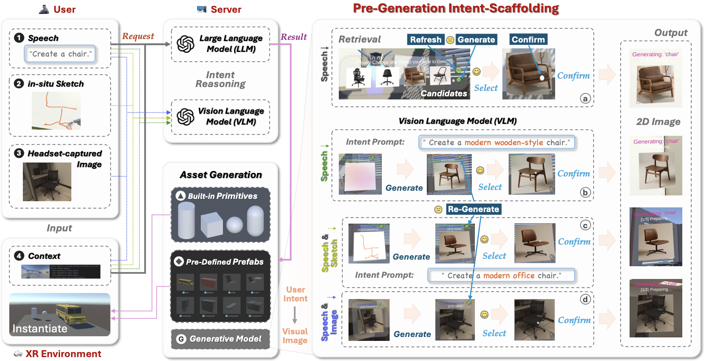
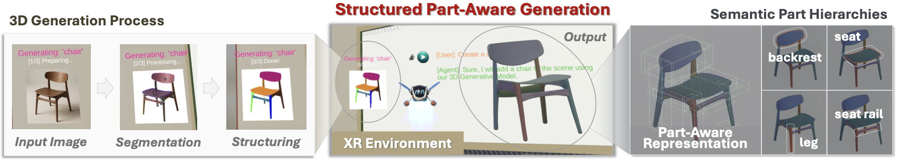
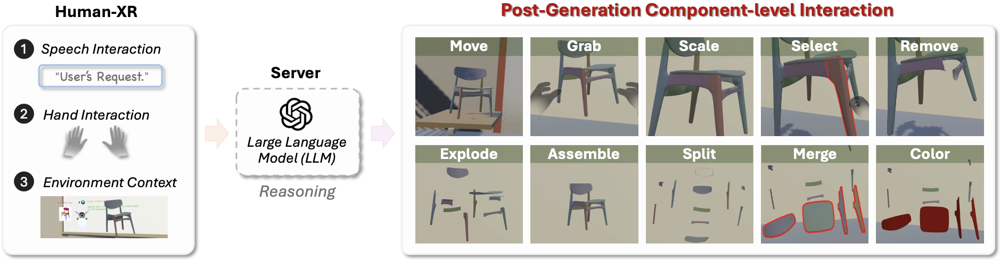
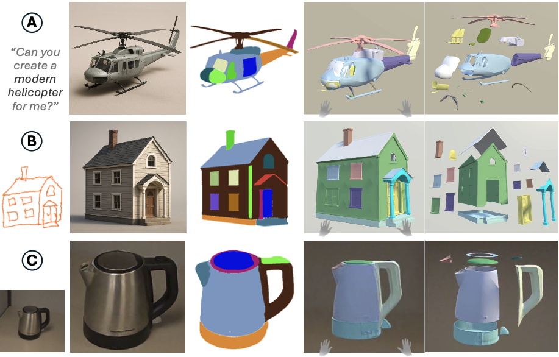
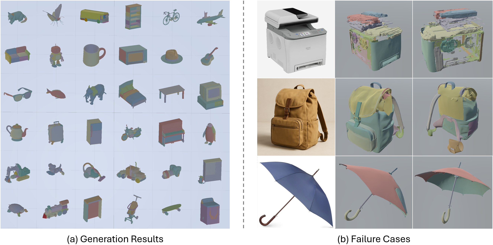

As Extended Reality (XR) evolves into an immersive computing medium, interactive 3D authoring becomes essential for creative and functional workflows. However, existing generative XR systems produce monolithic outputs lacking explicit semantic structure, limiting post-generation control.
We introduce PartInteractor, a representation-to-interaction framework that investigates how semantic part hierarchies can be incorporated into generative XR authoring, and exposed as first-class, directly manipulable units, turning one-shot prompt-to-object generation into continuous component-level co-creation.
PartInteractor supports speech, sketch, and image inputs, integrating an LLM interpreter with a retrieval-generation strategy to scaffold user intent prior to 3D generation. Instead of producing monolithic objects, our system generates semantically decomposed 3D assets with explicit part hierarchies, enabling rich component-level interaction over object structure and composition.
Our evaluations suggest that part-aware representation increases post-generation control and reduces reliance on whole-object regeneration, while intent scaffolding mitigates ambiguity and improves intent-result alignment, together supporting more expressive and controllable human-AI co-creation workflows.
These results highlight part-aware representation and intent scaffolding as promising design considerations for future generative XR authoring systems.
PartInteractor reconceptualizes generative XR authoring as a human-in-the-loop workflow rather than a one-shot prompt-to-object operation. The system tightly couples Pre-Generation Intent Scaffolding, Structured Part-Aware Generation, and Post-Generation Component-level Interaction into a continuous authoring pipeline within an immersive workspace.
Users express design intent through speech, in-situ sketches, or headset-captured images. An LLM/VLM backend interprets the input and presents 2D candidate visuals via retrieval or generation before expensive 3D synthesis, allowing users to confirm or refine intent at lower cost.

After candidate selection, the system converts the 2D representation into a structured 3D asset with explicit semantic part hierarchies. Components remain separate editable units rather than a monolithic mesh, preserving both geometry and part organization for subsequent interaction.

Generated objects become editable design artifacts. An LLM reasons over XR scene context to support component-level operations—including spatial manipulation, editing, structural inspection, restructuring, and appearance customization—without whole-object regeneration.

Users can express design ideas through speech alone or in combination with in-situ sketches or headset-captured images.

To further examine PartInteractor beyond the objects used in our user studies, we tested 51 everyday categories across three pathways: retrieval-only, generation-only, and retrieval-generation, with 17 cases each.

@inproceedings{jiang2026partinteractor,
title={PartInteractor: Intent-Driven Part-Aware 3D Authoring for Continuous Co-Creation in XR},
author={Jiang, Jianan and Li, Bin},
booktitle={Proceedings of the 39th Annual ACM Symposium on User Interface Software and Technology},
pages={1--13},
year={2026}
}